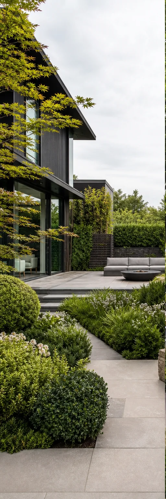
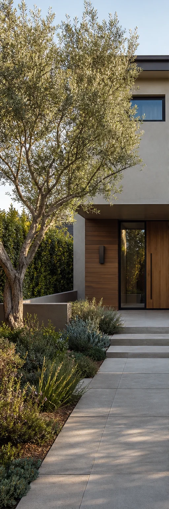
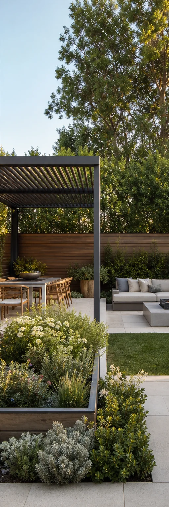
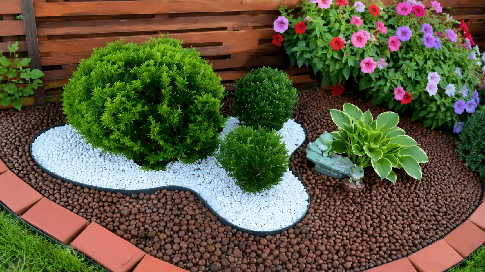
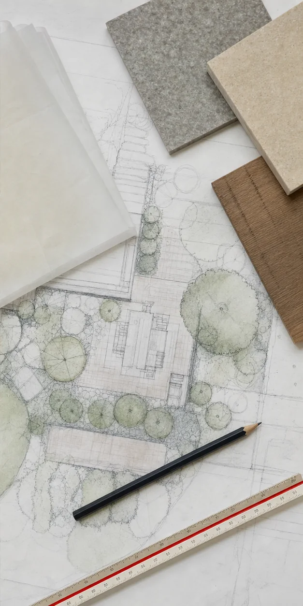

Landscape Planning, Viewed as a Whole.
Compare design directions, understand possible scope, and identify the questions that may shape a useful professional brief.
Eight connected options
Start With the Decision in Front of You.
Each service represents a planning focus, not a fixed package or direct construction offering.




Service explorer
Eight Views of One Property.
A project may involve several planning categories. Begin with the issue that most affects the next decision.
Residential Landscape Design
A property-wide view of outdoor rooms, circulation, privacy, planting, and phasing.
View planning detailsFront Yard Design
Arrival, threshold, movement, screening, and street-facing landscape character.
View planning detailsGarden & Planting Plans
Layered structure, seasonality, local suitability, spacing, and care expectations.
View planning details3D Visualization
Plan views and rendered perspectives focused on decisions that are difficult to judge in 2D.
View planning detailsFront + back
Two Edges of Residential Life.
Front Yard
Approach, address, visibility, screening, and neighborhood-facing character.
Backyard
Daily routines, gathering, retreat, planting, and flexible private use.
Connected systems
Planting, Surfaces, and Movement.
Planting
Living structure, scale, seasonality, exposure, and care expectations.
Hardscape
Durable surfaces, thresholds, edges, steps, and material relationships.
Circulation
Clear routes, comfortable dimensions, transitions, and accessible questions.
Visualization options
Use the Right View for the Decision.

Phased planning
Make the Framework Last.
The sequence can change, but the long-term relationships should remain coherent.
Context
Observe the site and define the brief.
Layout
Set zones, movement, and scale.
Structure
Coordinate primary surfaces and edges.
Planting
Build living layers and seasonal logic.
Detail
Refine lighting, furniture, and accents.
Services FAQ
Choosing a Place to Start.
Yes. A property-wide inquiry can include planting, circulation, lighting, visualization, and phased priorities.
No. Provider participation, experience, and service availability vary by location and property type.
No. Visualizations communicate spatial or aesthetic direction and do not replace construction documents.
Unsure where to begin?
Describe the Property, Not a Package.
Verdeon can help organize the request around the decisions that matter now.